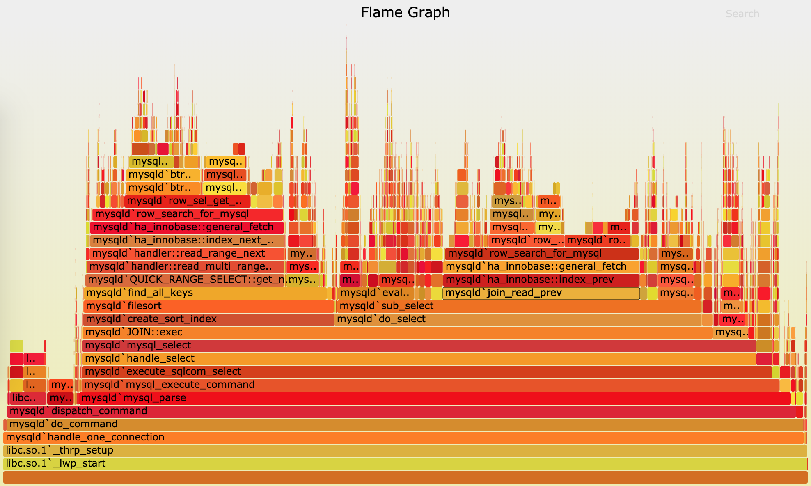
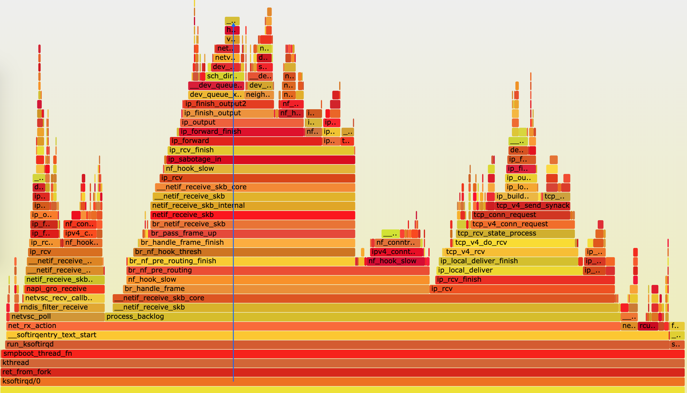
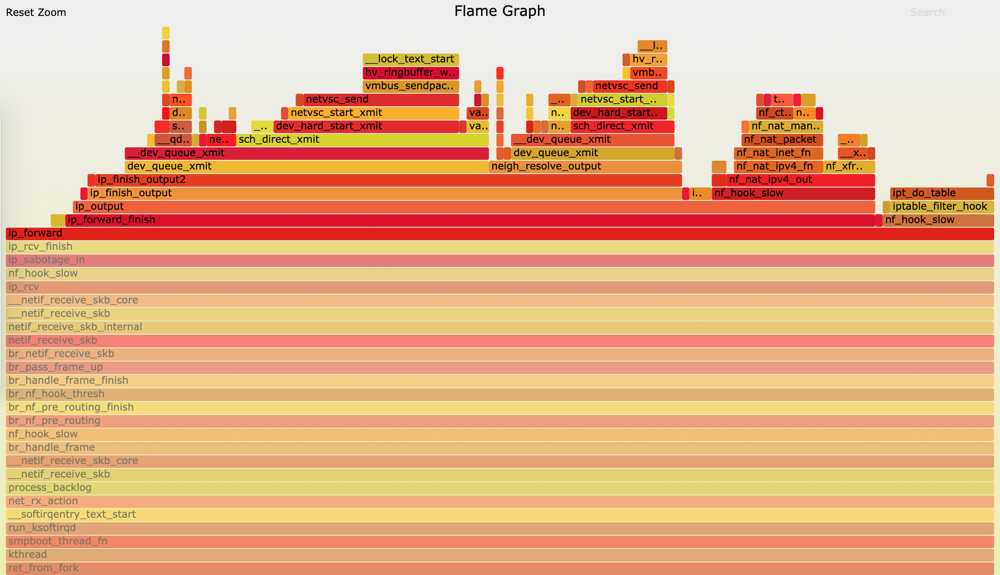

内核线程
在 Linux 中，用户态进程的“祖先”，都是 PID 号为 1 的 init 进程。比如，现在主流的 Linux 发行版中，init 都是 systemd 进程；而其他的用户态进程，会通过 systemd 来进行管理。
实际上，Linux 在启动过程中，有三个特殊的进程，也就是 PID 号最小的三个进程。
- 0 号进程为 idle 进程，这也是系统创建的第一个进程，它在初始化 1 号和 2 号进程后，演变为空闲任务。当 CPU 上没有其他任务执行时，就会运行它。
- 1 号进程为 init 进程，通常是 systemd 进程，在用户态运行，用来管理其他用户态进程。
- 2 号进程为 kthreadd 进程，在内核态运行，用来管理内核线程。
所以，要查找内核线程，我们只需要从 2 号进程开始，查找它的子孙进程即可。比如，你可以使用 ps 命令，来查找 kthreadd 的子进程：
$ ps -f --ppid 2 -p 2
UID PID PPID C STIME TTY TIME CMD
root 2 0 0 12:02 ? 00:00:01 [kthreadd]
root 9 2 0 12:02 ? 00:00:21 [ksoftirqd/0]
root 10 2 0 12:02 ? 00:11:47 [rcu_sched]
root 11 2 0 12:02 ? 00:00:18 [migration/0]
...
root 11094 2 0 14:20 ? 00:00:00 [kworker/1:0-eve]
root 11647 2 0 14:27 ? 00:00:00 [kworker/0:2-cgr]
内核线程的名称（CMD）都在中括号里。所以，更简单的方法，就是直接查找名称包含中括号的进程。比如：
$ ps -ef | grep "\[.*\]"
root 2 0 0 08:14 ? 00:00:00 [kthreadd]
root 3 2 0 08:14 ? 00:00:00 [rcu_gp]
root 4 2 0 08:14 ? 00:00:00 [rcu_par_gp]
...
了解内核线程的基本功能，对我们排查问题有非常大的帮助。比如，我们曾经在软中断案例中提到过 ksoftirqd。它是一个用来处理软中断的内核线程，并且每个 CPU 上都有一个。
如果你知道了这一点，那么，以后遇到 ksoftirqd 的 CPU 使用高的情况，就会首先怀疑是软中断的问题，然后从软中断的角度来进一步分析。
其实，除了刚才看到的 kthreadd 和 ksoftirqd 外，还有很多常见的内核线程，我们在性能分析中都经常会碰到，比如下面这几个内核线程。
- kswapd0：用于内存回收。在 Swap 变高 案例中，我曾介绍过它的工作原理。
- kworker：用于执行内核工作队列，分为绑定 CPU （名称格式为 kworker/CPU86330）和未绑定 CPU（名称格式为 kworker/uPOOL86330）两类。
- migration：在负载均衡过程中，把进程迁移到 CPU 上。每个 CPU 都有一个 migration 内核线程。
- jbd2/sda1-8：jbd 是 Journaling Block Device 的缩写，用来为文件系统提供日志功能，以保证数据的完整性；名称中的 sda1-8，表示磁盘分区名称和设备号。每个使用了 ext4 文件系统的磁盘分区，都会有一个 jbd2 内核线程。
- pdflush：用于将内存中的脏页（被修改过，但还未写入磁盘的文件页）写入磁盘（已经在 3.10 中合并入了 kworker 中）。

这张图看起来像是跳动的火焰，因此也就被称为火焰图。要理解火焰图，我们最重要的是区分清楚横轴和纵轴的含义。
- 横轴表示采样数和采样比例。一个函数占用的横轴越宽，就代表它的执行时间越长。同一层的多个函数，则是按照字母来排序。
- 纵轴表示调用栈，由下往上根据调用关系逐个展开。换句话说，上下相邻的两个函数中，下面的函数，是上面函数的父函数。这样，调用栈越深，纵轴就越高。
要注意图中的颜色，并没有特殊含义，只是用来区分不同的函数。
火焰图是动态的矢量图格式，所以它还支持一些动态特性。比如，鼠标悬停到某个函数上时，就会自动显示这个函数的采样数和采样比例。而当你用鼠标点击函数时，火焰图就会把该层及其上的各层放大，方便你观察这些处于火焰图顶部的调用栈的细节。
上面 mysql 火焰图的示例，就表示了 CPU 的繁忙情况，这种火焰图也被称为 on-CPU 火焰图。如果我们根据性能分析的目标来划分，火焰图可以分为下面这几种。
- on-CPU 火焰图：表示 CPU 的繁忙情况，用在 CPU 使用率比较高的场景中。
- off-CPU 火焰图：表示 CPU 等待 I/O、锁等各种资源的阻塞情况。
- 内存火焰图：表示内存的分配和释放情况。
- 热 / 冷火焰图：表示将 on-CPU 和 off-CPU 结合在一起综合展示。
- 差分火焰图：表示两个火焰图的差分情况，红色表示增长，蓝色表示衰减。差分火焰图常用来比较不同场景和不同时期的火焰图，以便分析系统变化前后对性能的影响情况。
火焰图分析
首先，我们需要生成火焰图。我们先下载几个能从 perf record 记录生成火焰图的工具，这些工具都放在 https://github.com/brendangregg/FlameGraph 上面。你可以执行下面的命令来下载：
$ git clone https://github.com/brendangregg/FlameGraph
$ cd FlameGraph
安装好工具后，要生成火焰图，其实主要需要三个步骤：
- 执行 perf script ，将 perf record 的记录转换成可读的采样记录；
- 执行 stackcollapse-perf.pl 脚本，合并调用栈信息；
- 执行 flamegraph.pl 脚本，生成火焰图。
不过，在 Linux 中，我们可以使用管道，来简化这三个步骤的执行过程。假设刚才用 perf record 生成的文件路径为 /root/perf.data，执行下面的命令，你就可以直接生成火焰图：
$ perf script -i /root/perf.data | ./stackcollapse-perf.pl --all | ./flamegraph.pl > ksoftirqd.svg
执行成功后，使用浏览器打开 ksoftirqd.svg ，你就可以看到生成的火焰图了。如下图所示：

根据刚刚讲过的火焰图原理，这个图应该从下往上看，沿着调用栈中最宽的函数来分析执行次数最多的函数。这儿看到的结果，其实跟刚才的 perf report 类似，但直观了很多，中间这一团火，很明显就是最需要我们关注的地方。
我们顺着调用栈由下往上看（顺着图中蓝色箭头），就可以得到跟刚才 perf report 中一样的结果：
- 最开始，还是 net_rx_action 到 netif_receive_skb 处理网络收包；
- 然后， br_handle_frame 到 br_nf_pre_routing ，在网桥中接收并执行 netfilter 钩子函数；
- 再向上， br_pass_frame_up 到 netif_receive_skb ，从网桥转到其他网络设备又一次接收。
不过最后，到了 ip_forward 这里，已经看不清函数名称了。所以我们需要点击 ip_forward，展开最上面这一块调用栈：

小结
从软中断 CPU 使用率的角度入手，用网络抓包的方法找出了瓶颈来源，确认是测试机器发送的大量 SYN 包导致的。而通过今天的 perf 和火焰图方法，我们进一步找出了软中断内核线程的热点函数，其实也就找出了潜在的瓶颈和优化方向。
其实，如果遇到的是内核线程的资源使用异常，很多常用的进程级性能工具并不能帮上忙。这时，你就可以用内核自带的 perf 来观察它们的行为，找出热点函数，进一步定位性能瓶。当然，perf 产生的汇总报告并不够直观，所以我也推荐你用火焰图来协助排查。
实际上，火焰图方法同样适用于普通进程。比如，在分析 Nginx、MySQL 等各种应用场景的性能问题时，火焰图也能帮你更快定位热点函数，找出潜在性能问题。